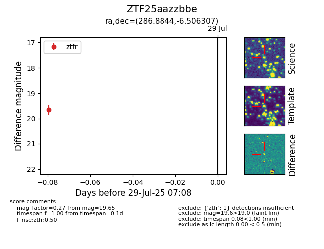

Target ZTF25aazzbbe at 2025-07-29 07:08, see:
FINK: fink-portal.org/ZTF25aazzbbe
Lasair: lasair-ztf.lsst.ac.uk/objects/ZTF25aazzbbe
ALeRCE: alerce.online/object/ZTF25aazzbbe
alt names
ZTF25aazzbbe (ztf,fink)
coordinates:
equatorial (ra, dec) = (286.8844,-6.50631)
galactic (l, b) = (28.9468,-6.53066)
photometry
last ztfr=19.65
1 ztfr detections
